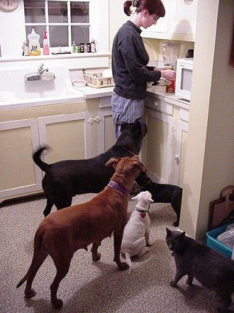

'잇(它)경제'가 만드는 새 소비 지형…문화·관광 결합 확산
반려동물 등 '잇(它)경제'가 문화·관광 소비의 새로운 지형을 만들고 있다는 분석이 나왔다. 반려동물과 함께하는 여행·체험·상품 시장이 빠르게 커지고 있다.
손승종 기자 · 2026.06.19
橋중국

환구망은 '잇경제(它經濟)'가 문화·관광 소비의 새 구도를 형성하고 있다는 진단을 전했다. 반려동물을 가족처럼 여기는 소비자가 늘며 관련 시장이 다변화하고 있다는 내용이다.
광고 문의 · 300×250소비 트렌드의 변화
'잇경제'는 반려동물 관련 소비를 넓게 일컫는 표현이다. 사료·용품을 넘어 반려동물 동반 숙박, 의료, 여행, 체험 상품으로 시장이 확장되고 있다. 1인 가구 증가와 정서적 소비 성향이 배경으로 꼽힌다.
문화·관광 업계는 반려동물 동반 서비스를 새로운 성장 동력으로 보고 상품을 늘리고 있다. 소비자의 생활 방식 변화가 산업 구조까지 바꾸는 사례다.
華橋時報는 소비·산업 트렌드를 경제의 관점에서 전한다. 자영업과 서비스업에 종사하는 화인에게도 새로운 시장 흐름은 참고가 된다.
출처·참고 (사실 확인용 — 본문은 직접 재작성)
· 환구망(環球網) 2026.06.18 '它經濟塑造文旅消費新格局'
· 환구망(環球網) 2026.06.18 '它經濟塑造文旅消費新格局'